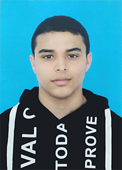

|  | Ismail BoujeddainJeune étudiant marocain en 2 ème année d’école de commerce. Je souhaiterais poursuivre mon parcours académique à l’étranger. L’excellent système éducatif et de reconnaissance mondiale dont dispose votre institution se présente pour moi comme une opportunité pour élargir mes connaissances et mettre en usage mes compétences. Etudiant en 2 eme annéeLangues: Arabe, Francais, Anglais, Espagnol, Allemand |